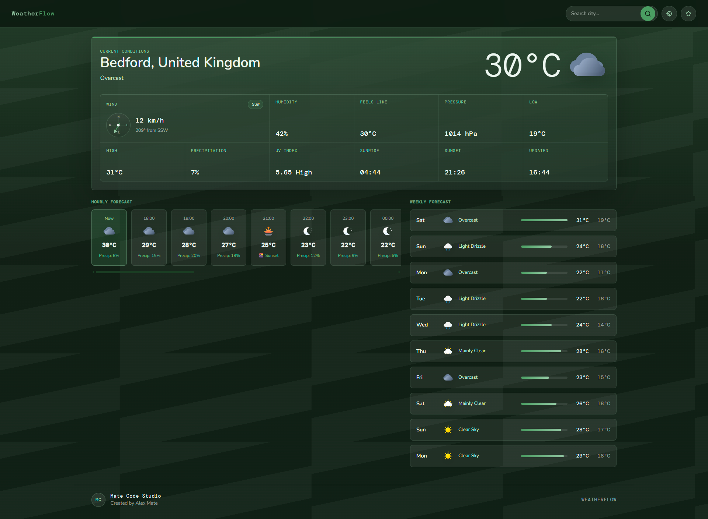
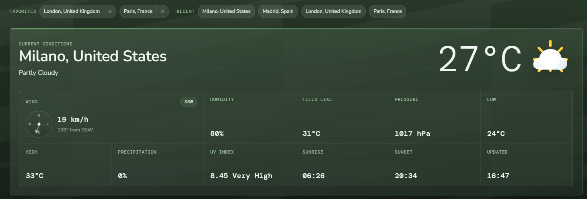

Problem
Weather data can become visually noisy when current conditions, hourly data, weekly forecasts, and saved locations all compete for attention.
Case study
A weather dashboard concept focused on turning dense forecast data into a clearer, easier-to-scan interface with city search, saved places, recent searches, and forecast views across the day and week.
The goal was to design a data-heavy screen that still feels calm, structured, and product-ready — the same kind of thinking needed for dashboards, internal tools, admin panels, and business reporting screens.
Frontend UI · Weather data · Dashboard design · Search flow · Favorites · Recent cities

Project snapshot
Weather apps often show a lot of useful information, but the experience can quickly feel crowded. I approached WeatherFlow as a product interface challenge: how can the most important weather information be seen quickly, while deeper forecast details remain easy to access?
Weather data can become visually noisy when current conditions, hourly data, weekly forecasts, and saved locations all compete for attention.
A structured dashboard layout that prioritises current conditions first, then supports the user with metrics, hourly forecasts, and weekly planning.
Visual hierarchy, dashboard rhythm, search flow, saved places, recent searches, and clear data presentation.
The same thinking can be applied to business dashboards, reporting tools, admin panels, and internal data-heavy screens.
The challenge
A weather interface has to answer several questions at once: what is happening now, what changes later today, what the next few days look like, and whether the user can move between locations quickly.
The challenge in WeatherFlow was not only showing more data. It was creating a layout where the most important information becomes obvious at a glance instead of getting buried inside equally weighted cards and text.
The solution
I designed WeatherFlow around a simple sequence: search for a city, read the current conditions first, scan supporting metrics, compare the next few hours, then move into the weekly forecast.
Supporting touches like favourites, recent locations, compact metric blocks, and repeated forecast cards help the interface feel more usable as a product instead of just a single-screen mockup.
Interface strategy
The layout is built around information priority. The city name, condition, and temperature take the first visual position because they answer the main question immediately. After that, the screen opens into supporting metrics and forecast sections in a more measured way.
Repeating the same card logic across hourly and weekly data helps the interface feel predictable. That matters in dashboards because users should spend their attention on the information, not on decoding a different layout pattern in every section.
Design decisions
Portfolio value
Even though WeatherFlow is a weather concept, the design thinking applies to many real products. Businesses often need dashboards, reporting screens, admin panels, or internal tools that turn raw data into something easier to understand quickly.
This case study shows how I think about clarity, scannability, layout structure, and interface hierarchy — useful skills for any client who needs a cleaner data-heavy screen.
What I learned
One of the clearest lessons was that visual hierarchy matters even more when the page contains many small pieces of information. Good spacing, repetition, and section ordering can make a complex layout feel much simpler without removing useful detail.
WeatherFlow helped me practise the relationship between product thinking and visual design: what the user needs to know first, what can be secondary, and how to keep the screen readable while still showing enough depth to feel useful.
Goals & features
This project was not only about making a weather interface look good. It was about showing that I can organise complex information into a layout that feels clear, useful, and client-ready.
Current conditions, temperature, and city information are placed first so the main answer is immediately visible.
The interface supports city search, saved places, and recent searches to make repeat use faster and more practical.
Hourly cards and weekly forecast rows help users compare changes quickly without reading long blocks of text.
The dark green style, panel structure, and consistent cards make the concept feel more like a real product than a simple demo.
Screens
These screens show the main WeatherFlow dashboard, including the current conditions layout, city search direction, saved/recent location flow, and forecast sections.

Need something similar?
I can help turn complex information into a cleaner, more useful interface for your users or business workflow — whether that is an internal tool, reporting screen, small dashboard, or practical frontend concept.